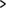

16. Listas HTML
Ben Buchanan. 8 de julio del 2008. Publicado en: definición, ordenado, desordenado, xhtml, html
Las listas se utilizan para agrupar datos relacionados para que queden claramente asociadas entre ellas y sean fáciles de leer. En el desarrollo de las webs modernas, las listas son elementos muy habituales que se utilizan tanto para la navegación, como para el contenido general.
Las listas son muy adecuadas desde un punto de vista estructural, ya que ayudan a crear un documento bien estructurado, más accesible y fácil de mantener. También son útiles por una razón puramente práctica: aportan elementos adicionales a los que adjuntar estilos CSS y disponer así de una gran variedad de estilos (más adelante en este curso ya hablaremos del CSS; para saber cuáles son los apartados sobre el CSS que hay disponibles, podéis consultar el índice de contenidos).
En este apartado explicaremos los diferentes tipos de listas disponibles en HTML, cuándo y cómo se deben utilizar y cómo aplicar algunos estilos básicos. El contenido es el siguiente (¡Mira! ¡Es una lista!):
Los contenidos de este apartado son los siguientes:
- 16.1. Los tres tipos de listas
- 16.1.1. Listas no ordenadas
- 16.1.2. Etiquetado de listas no ordenadas
- 16.1.3. Listas ordenadas
- 16.1.4. Etiquetado de listas ordenadas
- 16.1.5. Empezar listas ordenadas con un número diferente de 1
- 16.1.6. Listas de definiciones
- 16.2. Elegir entre tipos de listas
- 16.3. La diferencia entre listas HTML y texto
- 16.4. Anidar listas
- 16.5. Ejemplo paso a paso
- 16.5.1. Etiquetado de la página principal
- 16.5.2. Añadir algunos estilos
- 16.5.3. La página de la receta
- 16.5.4. Etiquetado de la página de la receta
- 16.5.5. Estilos de la página de la receta
- Resumen
- Preguntas de repaso
- Lecturas complementarias
16.1. Los tres tipos de listas
En el HTML hay tres tipos de listas:
lista no ordenada: esse utiliza para agrupar elementos relacionados sin ningún orden en concreto.
lista ordenada: se utiliza para agrupar elementos relacionados en un orden concreto.
lista de definiciones: se utiliza para mostrar parejas de nombres y valores, como por ejemplo términos y sus definiciones u horas y actos.
Cada una de estas listas tiene una finalidad y un significado específicos y no son intercambiables.
16.1.1. Listas no ordenadas
Las listas no ordenadas, o listas de picos, se utilizan cuando tenemos una serie de elementos que se pueden colocar en cualquier orden.
La lista de la compra
Un ejemplo de esto podría ser una lista de la compra:
leche
pan
mantequilla
café
Todos estos elementos forman parte de una lista, pero se pueden poner en cualquier orden sin que la lista pierda su sentido:
pan
café
leche
mantequilla
Se puede utilizar CSS para cambiar el pico a uno de los distintos estilos por defecto, puede usarse una imagen propia o incluso se pueden hacer listas sin picos; más adelante, en este mismo apartado, veremos cómo hacerlo y en otros apartados sobre el CSS lo explicaremos con más detalle. Si lo encontráis un poco confuso, no es necesario que os preocupéis por el CSS ahora; ya lo aclararemos todo más adelante, en Estilos de listas y enlaces.
16.1.2. Etiquetado de listas no ordenadas
Las listas no ordenadas utilizan las etiquetas <ul></ul> alrededor de múltiples grupos de <li></li>.
<ul>
<li>pan</li>
<li>café</li>
<li>leche</li>
<li>mantequilla</li>
</ul>16.1.3. Listas ordenadas
Las listas ordenadas, o listas numeradas, se utilizan cuando tenemos una serie de elementos que se deben colocar en un orden concreto.
Un ejemplo de esto podrían ser las instrucciones de cocina, que se deben seguir por orden para que la receta salga bien:
Tened todos los ingredientes a mano
Mezclad todos los ingredientes
Poned la mezcla en una bandeja para el horno
Dejadlo cocer durante una hora
Sacadlo del horno
Dejadlo reposar durante diez minutos
Servidlo
Si los elementos de la lista se desordenan, la información no tendrá ningún sentido:
Tened todos los ingredientes a mano
Dejadlo cocer durante una hora
Sacadlo del horno
Servidlo
Poned la mezcla en una bandeja para el horno
Dejadlo reposar durante diez minutos
Mezclad todos los ingredientes
Las listas ordenadas se pueden mostrar con varios sistemas de numeración o alfabéticos; es decir, letras o números. El sistema por defecto de la mayoría de los navegadores son los números decimales, pero hay más opciones:
Letras
– Letras ASCII en minúsculas (a, b, c...)
– Letras ASCII en mayúsculas (A, B, C...)
– Letras griegas clásicas en minúsculas: (α, β, γ...)
Números
– Números decimales (1, 2, 3...)
– Números decimales con ceros iniciales (01, 02, 03...)
– Números romanos en minúsculas (i, ii, iii...)
– Números romanos en mayúsculas (I, II, III ...)
– Numeración georgiana tradicional (an, ban, gan...)
– Numeración armenia tradicional (mek, yerku, yerek...)
Aquí también podéis utilizar el CSS para cambiar el estilo de vuestras listas.
16.1.4. Etiquetado de listas ordenadas
Las listas ordenadas utilizan las etiquetas <ol></ol> alrededor de múltiples grupos de <li></li>.
<ol>
<li>Tened todos los ingredientes a mano</li>
<li>Mezclad todos los ingredientes</li>
<li>Poned la mezcla en una bandeja para el horno</li>
<li>Dejadlo cocer durante una hora</li>
<li>Sacadlo del horno</li>
<li>Dejadlo reposar durante diez minutos</li>
<li>Servidlo</li>
</ol>16.1.5. Empezar listas ordenadas con un número diferente de 1
Es posible hacer que una lista ordenada empiece con un número diferente del 1 (o i, I, etc.). Esto se consigue con el atributo start, que define un valor numérico incluso aunque utilicéis el CSS para cambiar los contadores de la lista y hacer que sean caracteres alfabéticos o números romanos con la propiedad list-style-type. Esto puede ser útil si tenéis una única lista de puntos pero queréis romperla con una nota u otro tipo de información relacionada.
Lo podríamos hacer, por ejemplo, con la lista anterior:
<ol>
<li>Tened todos los ingredientes a mano</li>
<li>Mezclad todos los ingredientes</li>
<li>Poned la mezcla en una bandeja para el horno</li>
</ol>
<p class="note">Antes de poner la mezcla en la bandeja, precalentad
el horno a 180 grados centígrados para tenerlo a punto para el siguiente paso</p>
<ol start="4">
<li>Dejadlo cocer durante una hora</li>
<li>Sacadlo del horno</li>
<li>Dejadlo reposar durante diez minutos</li>
<li>Servidlo</li>
</ol>Con ello se obtiene el resultado siguiente:
Tened todos los ingredientes a mano
Mezclad todos los ingredientes
Poned la mezcla en una bandeja para el horno
Antes de poner la mezcla en la bandeja, precalentad el horno a 180 grados centígrados para tenerlo a punto para el siguiente paso
Dejadlo cocer durante una hora
Sacadlo del horno
Dejadlo reposar durante diez minutos
Servidlo
Tened en cuenta que este atributo ha sido desaprobado en la última versión de las especificaciones de HTML 4, lo que significa que vuestras páginas no validarán si utilizan doctypes estrictos HTML4. Si queréis utilizar esta función en una página HTML4 estricta y es absolutamente necesario validarla, podéis hacerlo utilizando los contadores de CSS en lugar de este atributo. <start> ha sido añadido de nuevo en HTML5, afortunadamente, pues resulta útil.
16.1.6. Listas de definiciones
Las listas de definiciones asocian elementos concretos y sus definiciones en un formato de lista. Por ejemplo, si queréis dar una definición de los elementos de vuestra lista de la compra, podéis hacerlo de la siguiente manera:
- leche
- Producto lácteo líquido de color blanco
- pan
- Alimento cocinado en el horno a base de harina.
- mantequilla
- Producto lácteo sólido de color amarillo
- café
- Semillas de los frutos de algunos árboles del café
Cada pareja de definicion y término compone un grupo de definición (o grupo nombre-valor). Podéis tener tantos grupos de definición como queráis, pero debe haber como mínimo un término y una definición en cada uno de los grupos. No es posible tener un término sin ninguna definición o una definición sin ningún término.
Podéis asociar más de un término a una única definición, o viceversa. Por ejemplo, el término café puede tener varios significados, que podéis mostrar uno después del otro:
- café
- bebida hecha a partir de granos de café tostados y molidos
- taza de café
- una reunión social en la que se consume café
- un color marrón tirando a oscuro
También es posible tener más de un término para la misma definición. Esto se utiliza para mostrar variaciones de un término, todas ellas con el mismo significado:
- soda
- gaseosa
- bebida gaseosa
- cola
- Bebida dulce con gas.
Las listas de definiciones son diferentes de los otros tipos de listas, ya que utilizan términos y descripciones en lugar de elementos de lista.
Así pues, las listas de definiciones utilizan las etiquetas <dl></dl> alrededor de grupos de <dt></dt> y <dd></dd>: Se debe aparejar como mínimo un <dt></dt> con como mínimo un <dd></dd>; el <dt></dt> debe ir siempre primero.
Una lista de definiciones muy sencilla con términos únicos y definiciones únicas tendría el siguiente aspecto:
<dl>
<dt>Término</dt>
<dd>Definición del término</dd>
<dt>Término</dt>
<dd>Definición del término</dd>
<dt>Término</dt>
<dd>Definición del término</dd>
</dl>Y se representa de la manera siguiente:
- Término
- Definición del término
- Término
- Definición del término
- Término
- Definición del término
En este ejemplo hemos asociado más de un término a una definición, y viceversa:
<dl>
<dt>Término</dt>
<dd>Definición del término</dd>
<dt>Término</dt>
<dt>Término</dt>
<dd>Definición aplicable a los dos términos anteriores</dd>
<dt>Término que puede tener las dos definiciones siguientes</dt>
<dd>Una definición del término</dd>
<dd>Otra definición del término</dd>
</dl>Y se representaría de la manera siguiente:
- Término
- Definición del término
- Término
- Término
- Definición aplicable a los dos términos anteriores
- Término que puede tener las dos definiciones siguientes
- Una definición del término
- Otra definición del término
En general, no es demasiado habitual asociar múltiples términos a una única definición, pero está bien saber que es posible por si alguna vez hay que hacerlo.
16.2. Elegir entre tipos de listas
A la hora de decidir el tipo de lista que utilizaréis, normalmente podréis tomar la decisión correcta respondiendo a dos preguntas muy sencillas:
¿Estoy definiendo términos (o asociando otras parejas nombre/valor)?
Si la respuesta es afirmativa, utilizad una lista de definiciones.
Si la respuesta es negativa, no utilicéis una lista de definiciones y pasad a la pregunta siguiente.
¿El orden de los elementos de la lista es importante?
Si la respuesta es afirmativa, utilizad una lista ordenada.
Si la respuesta es negativa, utilizad una lista no ordenada.
16.3. La diferencia entre listas HTML y texto
Es posible que os estéis preguntando cuál es la diferencia entre una lista HTML y el texto con picos o números escritos manualmente. El uso de una lista HTML tiene unas cuantas ventajas:
Si tenéis que cambiar el orden de los elementos de una lista ordenada, sólo será necesario que los mováis en el código HTML. Si hubierais escrito los números a mano, deberíais revisarlo a pesar de cambiar el número de cada uno de los elementos para corregir el orden, lo cual sería muy pesado.
El uso de una lista HTML permite aplicar correctamente estilo a la lista: se puede usar CSS para dar estilo únicamente a los elementos. Si os limitáis a utilizar un texto normal, os será mucho más difícil aplicar un estilo a los elementos individuales de manera útil, puesto que los elementos usados serán los mismos que se utilizan en el resto del texto.
Si utilizáis una lista HTML, el contenido tendrá la estructura semántica adecuada y no será sólo un efecto visual "tipo lista". Esto tiene unas ventajas importantes; por ejemplo, los lectores de pantalla pueden indicar a los usuarios con alguna deficiencia visual que están leyendo una lista y no un lío confuso de texto y números.
O, para decirlo de otra manera: el texto y las listas no son lo mismo. El uso de texto en lugar de una lista hará que tengáis más trabajo y puede provocar problemas en los lectores del documento. Por lo tanto, si vuestro documento necesita una lista, deberíais utilizar la lista HTML correcta.
16.4. Anidar listas
Un elemento de una lista puede contener otra lista; eso se conoce como "anidar" una lista. Puede ser útil para elementos como tablas de contenido:
Capítulo uno
Sección uno
Sección dos
Sección tres
Capítulo dos
Capítulo tres
La clave para anidar listas es recordar que la lista anidada debe estar relacionada con un elemento concreto de la lista. Para reflejarlo en el código, la lista anidada debe estar contenida en este elemento de la lista.
El código de la lista anterior es el siguiente:
<ol>
<li>Capítulo uno
<ol>
<li>Sección uno</li>
<li>Sección dos</li>
<li>Sección tres</li>
</ol>
</li>
<li>Capítulo dos</li>
<li>Capítulo tres</li>
</ol>Observad que la lista anidada empieza después del <li> y el texto del elemento de la lista que la contiene ("Capítulo uno"), y que acaba antes del </li> del elemento de la lista que la contiene. Las listas anidadas son normalmente la base para los menús de navegación de sitios web, ya que son una buena manera de definir la estructura del sitio.
En teoría, se pueden anidar tantas listas como se quiera, aunque en la práctica una anidación excesiva puede llegar a crear una situación muy confusa. En el caso de listas muy largas, puede ser mejor dividir el contenido en varias listas con títulos o incluso dividirla en varias páginas.
16.5. Ejemplo paso a paso
A continuación, veremos un ejemplo paso a paso en el que incluiremos todo lo que hemos explicado hasta ahora. Imaginemos la siguiente situación:
Estáis creando un pequeño sitio web para la Escuela de Cocina HTML. En la página principal debe aparecer una lista de recetas clasificadas por categorías que nos deben llevar a las páginas de las recetas. Cada una de las páginas de recetas incluye una lista con los ingredientes necesarios, notas sobre estos ingredientes y el método de preparación. Las tres categorías son:
- "Pasteles" (que incluye recetas para "Bizcocho", "Pastel de chocolate" y "Pastel de manzana")
- "Galletas" (que incluye recetas para "Galletas de avena y coco", "Gotas de mermelada" y "Momentos dulces")
- "Panes rápidos" (que incluye recetas para "Pan de soda" y "Panecillos de leche")
El cliente no tiene ninguna preferencia por el orden en el que aparezcan las categorías y las recetas; sólo quiere estar seguro de que la gente sabrá qué elementos son categorías y cuáles son recetas.
Ahora iremos pasando por todo el proceso de creación de este sitio.
16.5.1. Etiquetado de la página principal
-
Cread una página HTML bien formada que incluya el
doctypey los elementoshtml,headybodyy guardadla como stepbystep-main.html. Añadid el título principal (h1) "Escuela de cocina HTML" y un subtítulo (h2) "Recetas":<h1>Escuela de cocina HTML</h1> <h2>Recetas</h2> -
Debéis presentar tres categorías de recetas y el orden no es importante; en este caso, lo más adecuado es una lista no ordenada y, por lo tanto, deberéis añadir lo siguiente a vuestra página:
<h2>Recetas</h2> <ul> <li>Pasteles</li> <li>Galletas</li> <li>Panes rápidos</li> </ul>El sangrado de los elementos
li, aunque no es necesario, hace que el código sea más legible. Ahora deberéis añadir las recetas como subelementos; por ejemplo, "Bizcocho", "Pastel de chocolate" y "Pastel de manzana" deben ir a la categoría "Pasteles". Para hacerlo, debéis crear una lista anidada en cada uno de los elementos. Como el orden no es importante, aquí también deberemos utilizar listas no ordenadas. Con el fin de facilitar las cosas en este tutorial, enlazaremos todas las recetas a una única página de receta (más adelante se explican los enlaces HTML con más detalle. Si queréis información sobre los enlaces, podéis ir a la sección correspondiente):
Ved también
Podéis ver el apartado 19 de este módulo.
<h2>Recetas</h2>
<ul>
<li>Pasteles
<ul>
<li><a href="stepbystep-recipe.html">Bizcochos</a></li>
<li><a href="stepbystep-recipe.html">Pastel de chocolate</a></li>
<li><a href="stepbystep-recipe.html">Pastel de manzana</a></li>
</ul>
</li>
<li>Galletas
<ul>
<li><a href="stepbystep-recipe.html">Galletas de avena y coco</a></li>
<li><a href="stepbystep-recipe.html">Gotas de mermelada</a></li>
<li><a href="stepbystep-recipe.html">Momentos dulces</a></li>
</ul>
</li>
<li>Panes/panes rápidos
<ul>
<li><a href="stepbystep-recipe.html">Pan de soda</a></li>
<li><a href="stepbystep-recipe.html">Panecillos de leche</a></li>
</ul>
</li>
</ul>16.5.2. Añadir algunos estilos
Debemos volver a señalar que no debéis preocuparos excesivamente del CSS en este apartado, si no lo entendéis,. Aquí sólo veremos el CSS de una manera muy superficial, y ya hablaremos de él con mucho más detalle más adelante en este mismo curso.
Al cliente le gusta esta organización, pero quiere que las categorías se indiquen con unas flechas pequeñas en lugar de picos. También quiere que las categorías queden alineadas a la izquierda de la página. Para hacerlo, debéis especificar una imagen en lugar de un pico y que entonces defináis los ajustes de margen/separación.
Para evitar conflictos con otras listas del sitio, deberéis añadir una clase a la lista para poder crear selectores contextuales específicos en vuestra hoja de estilos. La clase "lista de recetas" podría ser adecuada:
<h2>Recetas</h2> <ul class="lista-de-recetas">Ahora debéis crear una hoja de estilo y añadir unas cuantas reglas, pero en primer lugar debéis añadir etiquetas
stylede apertura y de cierre en elheadde vuestro documento.Ahora eliminaréis el espaciado de la lista. Por defecto, algunos navegadores utilizan
marginy otrospaddingpara separar los elementos y, por lo tanto, deberéis ajustar los dos a cero; debéis añadir lo siguiente entre las etiquetasstyle:ul.lista-de-recetas { margin-left: 0; padding-left: 0; }A continuación, debéis crear una imagen de pico personalizada; si queréis, podéis utilizar la nuestra (podéis ver la figura 1).
Figura 1. Imagen de pico personalizada.
Ahora deberéis eliminar los picos de los elementos de la lista, definir el pico como imagen de fondo para éstos y añadir un poco de separación a fin de que el texto no quede sobre la imagen de fondo. Podéis hacerlo añadiendo el siguiente CSS justo antes de la etiqueta
stylede cierre:ul.lista-de-recetas li { list-style-type: none; background: #fff url("example-bullet.gif") 0 0.4em no-repeat; padding-left: 10px; }Finalmente, deberéis volver a poner los picos en los elementos de la lista anidada y definir un fondo de color blanco (la segunda norma es más específica, por lo que anulará la norma de la imagen de fondo). Recordad que la lista anidada heredará la primera norma del CSS, por lo que deberéis "deshacer" todos los ajustes de la lista principal. Añadid el siguiente CSS justo antes de la etiqueta
stylede cierre:ul.lista-de-recetas li li { list-style-type: disc; background: #fff; }
El resultado final debería ser algo similar a lo que aparece en la figura 2:
Figura 2. La página principal acabada con imágenes de picos personalizadas.
También podéis ver más ejemplos en: "HTML Cooking School"
16.5.3. La página de la receta
En este ejemplo sólo crearemos la página de la receta para el bizcocho, pero, si queréis, podéis crear las otras por vuestra cuenta utilizando esta página como plantilla. El cliente os ha suministrado la receta del bizcocho en un archivo de texto que tiene el siguiente aspecto:
Bizcocho
Ingredientes
3 huevos
100 gr de azúcar glas
85 gr de harina con levadura
Notas sobre los ingredientes:
Azúcar glas: azúcar blanco granulado muy fino.
Harina con levadura: una mezcla ya preparada de harina y agentes gasificantes
(normalmente sal y levadura artificial).
Preparación
1. Precalentad el horno a 190° C.
2. Engrasad un molde redondo de 20 cm.
3. En un bol de tamaño medio, mezclad los huevos y el azúcar glas hasta
obtener una mezcla esponjosa.
4. Incorporad la harina.
5. Poned esta mezcla en el molde preparado.
6. Horneadlo durante 20 minutos en el horno precalentado, o hasta que la
parte superior del bizcocho recupere la forma al apretarla ligeramente.
7. Dejadlo enfriar dentro del molde sobre una reja metálica.16.5.4. Etiquetado de la página de la receta
Cread otro documento HTML de la manera adecuada y guardadlo como en stepbystep-recipe.html. Añadidle los títulos siguientes:
<h1>Bizcocho</h1> <h2>Ingredientes</h2> <h3>Notas sobre los ingredientes</h3> <h2>Preparación</h2>La lista de ingredientes tiene varios elementos, pero el orden no es importante. Así pues, hay que utilizar una lista desordenada. Añadid lo siguiente a
bodyde vuestro HTML:<h2>Ingredientes</h2> <ul> <li>3 huevos</li> <li>100 gr de azúcar glas</li> <li>85 gr de harina con levadura</li> </ul>Las notas sobre los ingredientes son para definir adecuadamente qué son algunos de los ingredientes. Debéis asociar el ingrediente (el término) con su definición. Para ello, hay que utilizar una lista de definiciones. Añadid lo siguiente a vuestro HTML, bajo la lista desordenada del paso anterior:
<h3>Notas sobre los ingredientes</h3> <dl> <dt>Azúcar glas</dt> <dd>Azúcar blanco granulado muy fino</dd> <dt>Harina con levadura</dt> <dd>Una mezcla ya preparada de harina y agentes gasificantes (normalmente sal y azúcar artificial).</dd> </dl>La preparación debe seguir, como es obvio, el orden correcto, por lo que deberemos utilizar una lista ordenada; añadid lo siguiente a vuestro HTML, bajo la lista de definiciones:
<h2>Preparación</h2> <ol> <li>Precalentad el horno a 190ºC.</li> <li>Engrasad un molde redondo de 20 cm.</li> <li>En un bol de tamaño medio, mezclad los huevos y el azúcar glas hasta obtener una mezcla esponjosa.</li> <li>Incorporad la harina</li> <li>Poned esta mezcla en el molde preparado.</li> <li>Horneadlo durante 20 minutos en el horno precalentado, o hasta que la parte superior del bizcocho recupere la forma al apretarla ligeramente.</li> <li>Dejadlo enfriar dentro del molde sobre una reja metálica.</li> </ol>
16.5.5. Estilos de la página de la receta
El cliente está muy contento con los resultados, pero quiere que las definiciones aparezcan en negrita para